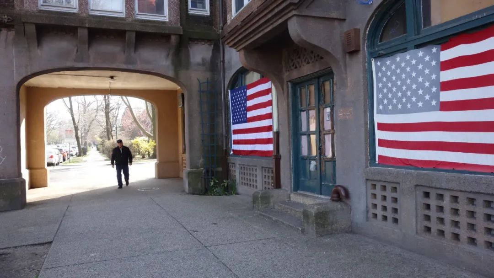
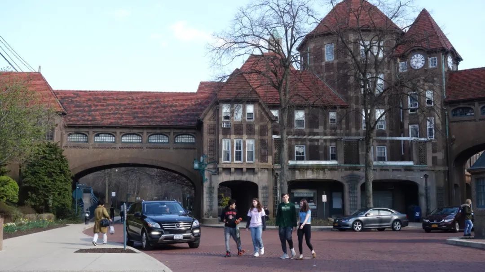

饶蕾：纽约疫情日记(3)：哈佛校长确诊（3月24日）
原文链接 备份链接 作者近照 【作者按】截止2020年3月21日美东时间晚7点，美国总确诊人数25730人，死亡311人。纽约州是疫情重灾区，11727人确诊，60人死亡。华盛顿州1793人确诊，94人死亡。加州1370人确诊，24人死 …

原本是坐在观众席上打瞌睡的纽约人
怎么会一下子被推上了前台
站在聚光灯下一脸懵圈了


3月22日，纽约“封城”前夕的街头。
一切都发生得太快。昨天、今天和明天的界线，像在飞速奔驰的火车上看到的铁轨旁的路标一样，无法辨识。你不知道这辆车去向何方，只知道下一站比这一站更糟糕。
进入3月，新冠疫情在这里暴发后，纽约人就生活在这样的噩梦中。当我意识到，应该开始把每天的日常记录下来，以留下寻找出口的线索时，故事的开头已经恍如隔世。以至于到现在我都想不明白，在这场疫情中，原本是坐在观众席上打瞌睡的纽约人，怎么会一下子被推上了前台，站在聚光灯下一脸懵圈了。
明明3月1号纽约出现第一个确诊病例的时候，我还在加勒比岛国巴巴多斯的海滩度假啊！在这个偏居一隅、天堂景致的热带小岛上，病毒听上去就像圣诞节的雪一样遥远。海边的出租躺椅上，半裸着暴晒的很多是游轮下来放风的外国游客。两个得克萨斯来的退休老师，跟我们讲起船刚到岸时，有当地卫生检疫部门的人上船给他们量体温的事情，眉飞色舞好像在讲一个笑话。
五天以后我们回到美国，特朗普总统就下令禁止一艘靠近旧金山的邮轮靠岸了。
明明3月10号，纽约州确诊病例142人的时候，我还去看了场百老汇剧啊！经典名剧《红磨坊》，台上的演员卖力地唱着：“克里斯丁，告诉我，我们相信的是什么？自由、美、真实和爱。” 1500人的剧场坐了九成满，密不透风，就我和老公两人戴着口罩。这既不自由也不美的怪异装束，招来无数诧异的目光，差不多都能跟台上演员抢镜了。
两天以后，纽约州州长下令关闭百老汇剧院。
明明3月14号，纽约州确诊病例613人的时候，我还去看了场电影啊！恐怖片《Invisible Man》，讲一个坏人穿了光学隐身衣作恶的故事。里面有个桥段，当坏人试图把所有坏事说成是他弟弟所为，坏人的老婆一针见血戳破谎言：“是他，都是他干的。”

3月20日，纽约街头闲逛的人们。
出了影院，街上的人们气定神闲跟平时没什么不同。我开始为自己戴着口罩给这个歌舞升平的城市增添了不安氛围而内疚，看到人们投来的眼神，我差不多都要指着我老公说：“是他，都是他干的。”（买口罩这件事确实是他干的。）
四天以后，电影院、酒吧、健身房，一切好玩的地方，都关了。
明明3月20号风和日丽，我家附近小区的街上还有很多人一身夏装短打，三五成群地聊天闲逛啊！我听到一个人说：“不该关掉所有酒吧啊，这叫人怎么活？”还有一个说：“千万不能因为病毒就戒烟，那样你会死得更快。”
两天以后，3月22日晚8点，整个纽约州按下“暂停键”，这个接近于封城的政策禁止民众在公共场合聚会、禁止非必需领域员工出门上班。
这一天，纽约州确诊病例超过15168个，一些公立医院门前来就诊的人们开始排起长队，口罩、防护服、呼吸机全部告急。一天以后全州确诊人数20875人，死亡过百。3月9日到3月18日之间，美股四次熔断；到3月23日，道琼斯指数较2月最高点下跌37%。由此，特朗普当选后股市涨幅全部清零。
这完全像是恐怖片的路数，从一开始的岁月静好、劲舞狂欢，到后来的惊慌失措、草木皆兵，只用了一场电影的时间。但恐怖片原本不是只能吓到观众吗？就算是临时上场的演员，纽约人不是已经事先看过剧本的吗？在中国上演过的所有桥段，在这里一模一样地重演一遍，还把自己弄得手忙脚乱，吓得面色苍白，这事到底怎么解释？
这当然不能都怪在纽约头上。美国总统特朗普从一开始对这个病毒就是战略、战术双藐视。2月10日，全美确诊人数12人，他在白宫记者会上的发言可以用四个字总结，即“相信奇迹”。
“我们现在说的这个病毒，你知道，很多人认为四月天气转暖就会消失啦，基本上四月份就没了。”他说。2月27日，总统还是固执地相信奇迹。在白宫非裔历史月晚宴上，他说：“（病毒）会消失的，有一天他就会像奇迹一样消失了。”
美国疾病预防控制中心（CDC）更是状况迭出，3月6日发到各地的70万个化验包出了错被召回，全国所有病例还是要统一交到CDC化验。到3月9日，八百多万人口的纽约市总共才化验了311人，确诊20人。纽约市长白思豪在3月16日的记者会上大骂“白宫无主”，说“联邦政府浪费了两个月完全没有作为，从设备到医院都没做好充足的准备”。

3月17日，纽约某超市的购物者。
但纽约市也并非无可指摘。3月9日的记者会上，在被问到纽约有没有可能像意大利那样失控时，市长白思豪是这样说的：“我非常同情意大利，但他们的防疫一开始就慢了半拍，他们还没开始想怎么应对的时候，疫情就大规模爆发了。我们已经准备了很长时间，我们有全美国甚至全世界最好的医院系统。我们早就开始在向纽约客发送防疫信息，他们都挺遵守的，所以我觉得我们的防疫比很多其他地方都会有力。”
从疫情一开始，纽约市的官员就在各种场合告诉民众，公立医院已经准备好1200张床位可以随时调用。在这天的记者会上，当再被问及1200张床是否够用时，医管局局长Mitchell Katz说：“八成感染者不需要来医院，只有两成感染者病情会严重到需要上医院的程度，而其中只有4-5%需要住进重症监护室。我们的容量足够了。”
可是到了3月24日，纽约州长柯莫在记者会上说，如果未来两周弄不到3万个呼吸机，未来两到三周不能增加14万个病床，纽约就招架不住了。
但这也不都全是政客的错。上面市长所说的“遵守防疫指南”的市民们，在我看来其实并不好找，更多人是像我的邻居麦克一样，直到美国的疫情汹涌之时，还以为这个病毒只属于“唐人街”。
去年，五十多岁的麦克从电视台摄像的工作提前退休，现在每天远离新闻，过着白天打网球、晚上弹吉他的悠闲生活。3月13日我在街上碰到他时，他一直问我，唐人街是不是因为疫情成了“鬼城”。而且在他的概念里，60岁以下的人是先天免疫的，我给他列举了很多三四十岁的死亡病例他都一笑置之，直到我说汤姆﹒汉克斯和本地CBS电视台的员工这两天都确诊了的时候，麦克的表情才严肃起来。
但比起迈阿密海滩上度春假的大学生们，麦克已经算是很清醒了。3月16日，特朗普号召民众保持六英尺“社交距离”，之后不到四天，在迈阿密的海滩上度假的美国大学生们喝得酩酊大醉，对着电视新闻的镜头说：“感染就感染吧，病毒不能阻止我去party！”
其实在这场疫情中，中国和海外华人的确都占得了先机。中国2002-2003年的非典留给政府和国民的痛苦记忆，到现在仍然清晰，给这次新冠的防疫提供了难得的参照。而美国类似的记忆只能追溯到1918年的大流感，那段经历对如今在世的美国人来说差不多都是二手的。
海外华人因为血脉联系，大都从一开始就关注着中国疫情的进展，很多华人在疫情刚进入美国时就已经开始忙着买油买米买口罩了，而那时候很多本土美国人还以为所谓“novel corona virus”（新冠病毒）指的是科罗娜（Corona）啤酒的新产品呢。
很长一段时间里，中国的新冠疫情对美国和本土美国人来说都是“别人家的故事”。“别人家的故事”再惨痛也不足以引起切肤之痛。相对自己脸上的疖子，谁会真正去关心别人的疾苦；相对于身边的鼓乐笙歌，谁能真正听到遥远的哭声呢？更何况美国人长期以来就习惯了接受全世界仰视的目光，也因此消磨了放眼全世界的兴趣和动力，而更容易拍着自己的肩膀由衷地赞叹：“你真棒，什么都比别人做得好。”
还有就是美国人珍视如生命的自由，在平时是这个国家引以为傲的立足之本，可是疫情到了危急时刻，你就会发现这种哪怕感染也得去party的自由精神，还真不如带红袖章的大妈站在小区门口严把进出更让人心安。虽说是“若为自由故”，但毕竟没了命自由也就无处安放了。
摄影：荣筱箐
值班编辑：俞杨
推荐阅读
▼


原文链接 备份链接 作者近照 【作者按】截止2020年3月21日美东时间晚7点，美国总确诊人数25730人，死亡311人。纽约州是疫情重灾区，11727人确诊，60人死亡。华盛顿州1793人确诊，94人死亡。加州1370人确诊，24人死 …
原文链接 备份链接 作者近照 欢迎收看二湘空间的世界疫情系列，六维，九维都会发，11维继续发方方日记，今天的《狂流》连载发在六维的二条。 菊子：美国东北部疫情日记（1） 饶蕾：纽约疫情日记（1） 大梨：德国疫情 美国疫情实录：西雅图·旧金 …
原文链接 备份链接 作者近照 欢迎收看二湘空间的世界疫情系列，六维，九维都会发，11维继续发方方日记。 饶蕾：纽约疫情日记：纽约按下暂停键（3月21日） 菊子：美国东北部疫情日记：疫情河东河西（3月20日） 菊子：美国东北部疫情日记：美国 …
原文链接 备份链接 作者近照 【作者按】截止2020年3月20日美东时间晚7点，美国美国总确诊人数19070人，死亡240人。纽约州是疫情重灾区，8310人确诊，42人死亡。华盛顿州1524人确诊，83人死亡。加州1169人确诊，20人死 …
原文链接 备份链接 美国约翰斯•霍普金斯大学统计显示，截至当地时间21日13时，美国新冠肺炎确诊病例已超过2万例，死亡278例。三天之内，全美确诊病例从1万例增至2万例。而更有研究分析，美国疫情的峰值最早可能要到5月份才能到来。 美国确 …